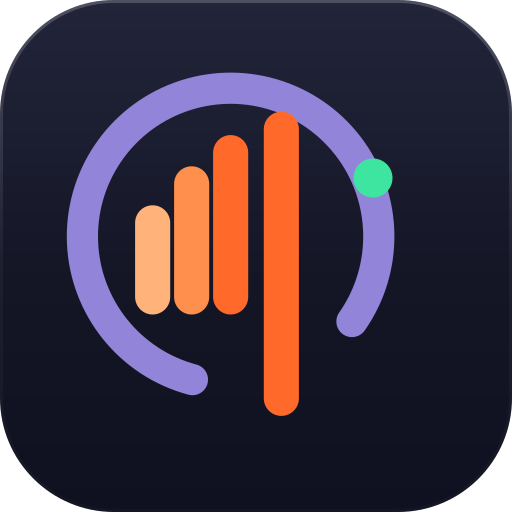
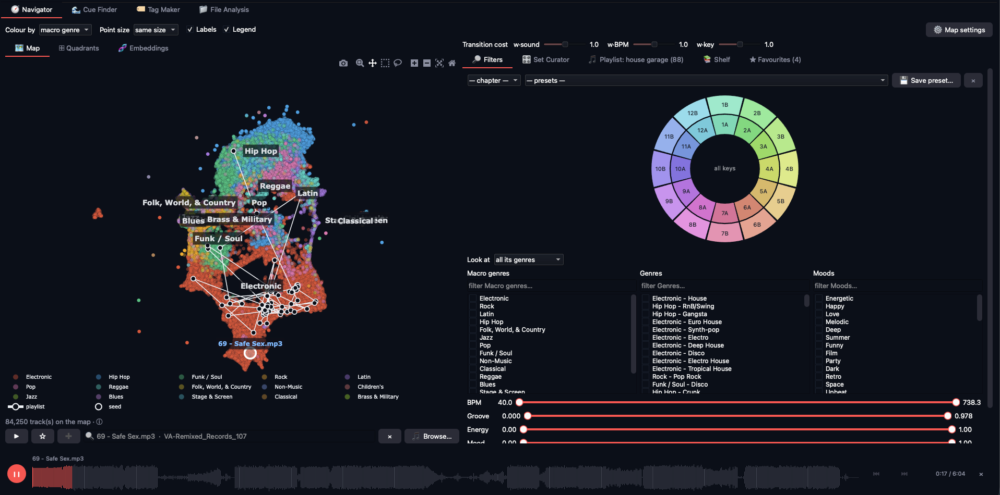
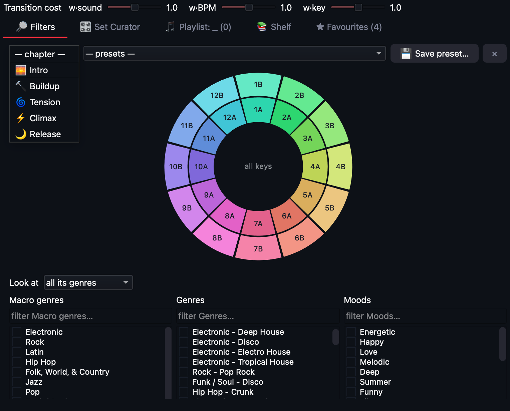
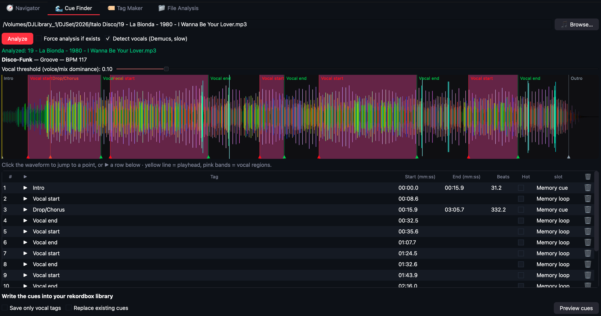
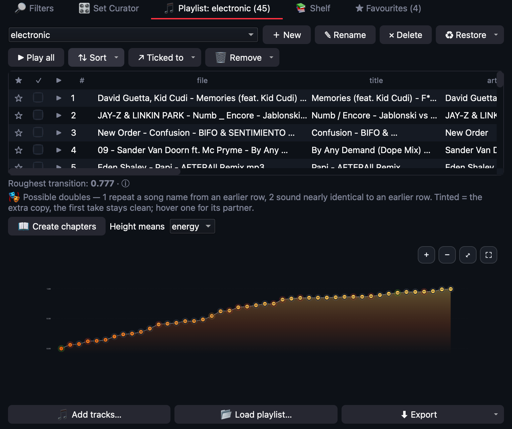

DjCaddyDjCaddy listens to every track in your library and draws it as a map where things that sound alike sit together. Click a track, see what mixes out of it, draw the arc of your set — then write the cues straight into rekordbox.
No account. No upload. Your music never leaves your Mac. Requires macOS 13 or newer. macOS only for now — why.

Past a few thousand tracks, a folder is a place where music goes to be forgotten. You know the record you want is in there. Finding the six tracks that belong next to it, at two in the morning, is another matter.
Genre tags are a guess someone made once. Tempo and key narrow the field but never say whether two tracks actually belong together. DjCaddy hears the track itself.
Not because the rest is worse — because it is invisible. A map shows the corners you never visit, and what lives there.
Point it at a folder and let it run. It is a long job — hours on a whole library — but it is resumable, it runs in the background, and the map is usable after the first few thousand tracks.
A neural network (Essentia's Discogs model) turns each track into a 1280-number fingerprint of how it sounds — before it gets flattened into a genre name. BPM and key are read from your tags or measured.
The fingerprints become a map: every track a point, alike ones together. Filter by genre, BPM, key, energy, mood. Colour and size the points by whatever you want to read.
Click a seed and see what mixes out of it. Box-select a group and let magic sort order it. Draw a lasso across the clusters and get a set that follows the line.
They are the four tabs of the app. Under all of them, one player with the waveform.
The map, and the Set Curator beside it: grow a chain one track at a time from ranked candidates, let Auto chain plan the run from here to a track you name, tune a Radio Mix from a group you like, or type what you want — "synth pop anni 80, solo extended" — and get a playlist. Export as M3U8 or rekordbox XML.

Phrase boundaries suggested on the waveform; check them by ear, tick which become hot cues (pads A–H) and which memory cues, and write them straight into the rekordbox library. No XML round-trip.

Genre and mood inferred by the model and written into the files' own tags — a track can be Minimal and Deep House, and both are kept. Your library gets the metadata it never had.
Duplicates, junk, files that will not open — and a quarantine plan you review before it runs. The library stays honest as it grows.
Every tool writes into the same playlist, and the playlist is a curve: one dot per track, the height whatever you choose to read — BPM, energy, mood. A set that climbs, holds and lets go looks like one. The roughest transition is named, repeats are tinted, and Create chapters splits the run into intro, buildup, tension, climax and release. Export as M3U8 or rekordbox XML.

Building the map, clicking a seed, drawing a lasso, writing the cues.
The trial is the full app, nothing locked. When the seven days are over the app asks for a licence key and nothing else changes — your map, playlists and cues stay where they are.
Everything is inside: the neural network and its models, the audio decoders, the stem separator used for the cue analysis. Nothing is downloaded later, nothing is sent anywhere, and it works with the network off.
About five seconds per track on Apple silicon. A 20,000-track library is a night; 90,000 is a few days of background work. It is resumable — stop it, use the Mac, pick it up later — and the map is already useful after the first few thousand tracks.
Any library of mp3 and flac files. Playlists export as M3U8 (everything reads it) and as rekordbox XML. Hot cues and memory cues are written directly into the rekordbox 6/7 database — for other software, export the XML.
Not for now. The library that listens to the tracks and builds the map has no Windows release, so a Windows DjCaddy could only open a map made on a Mac. That is not a product worth selling yet. If Windows is what you play on, leave your email and you will hear when that changes.
One computer, for good, with every 1.x update. Moving to a new Mac? Write in with your order number and the new machine code, and a new key comes back at no charge.
No. No account, no telemetry, no upload. The licence check happens on your machine. The only optional network feature is the Crate Buddy phrase reader, which uses your own Claude API key if you choose to add one.